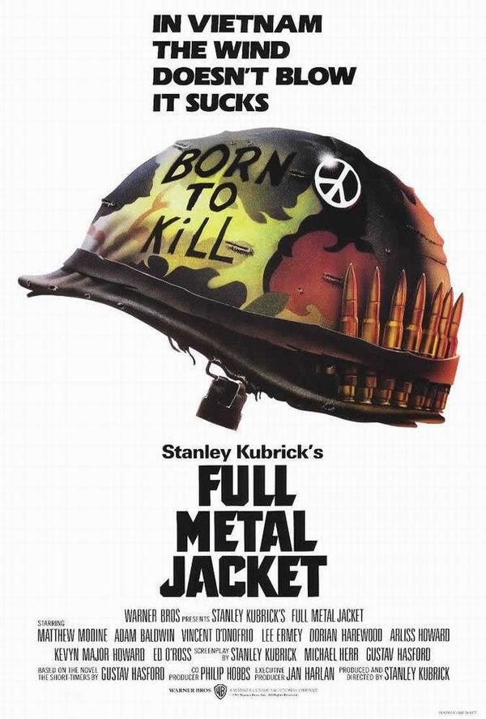

"Velvet-Strike’s sprays featured men kissing, and referenced Kubrick’s anti-war film Full Metal Jacket with a “Born to Kill” peace sign. This came at a time when the US military began developing and using first person shooter video games like America’s Army to recruit and train troops for their wars around the world, including, of course, in the Middle East."

Velvet-Strike is a piece of digital art. Specifically a mod created for one of the most popular realistic first person shooters, Counter-Strike. Counter-Strike
was a created on November 8 2000 as a mod to Half-Lyfe a Valve Corporation Game.
In Counter-Strike, you play on one of two teams which were Terrorists and Counter Terrorists. As a Terrorist your goal was to plant the bomb on the objective
and guard it until the timer runs out and detonates the bomb. Where as the Counter Terrorists objective is to defend the bomb sites by neutralizing all the terrorists
or defusing the bomb.
The mod Velvet-Strike specifically added sprays into the game which had featured men kissing, and referenced Kubrick’s anti-war film Full Metal Jacket with a “Born to Kill” peace sign.
The reason for Velvet-Strike's creation was after the tragic events of September 11 2001 attacks which triggered a United States retatiliatory action of dropping bombs on Afganistan.
The timing of this mod's creation was important to keep in mind as well as this was a time where gaming was becoming more mainstream and were being created and used by the army to
potentially recruit gamers. The creators of this mod have stated that they wanted video games to be more of a fantasy of what could be rather than be rooted in

"Velvet-Strike was intended by its makers to deliver an anti-war message in a relevant media."
"Velvet-Strike transgressively turned the tables on Counter-Strike, introducing a collection of aesthetic mods (called “sprays” in Counter-Strike) that defied the hypermasculine and often grotesque mainstream sprays commonly introduced by players."